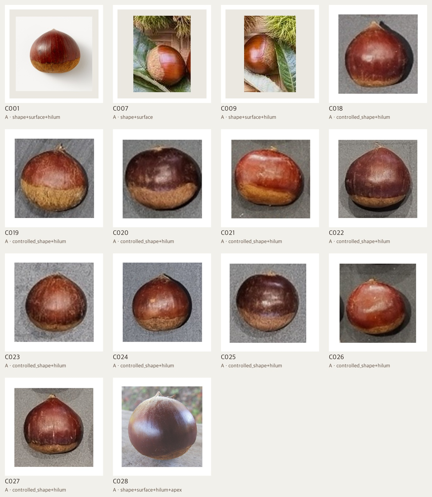
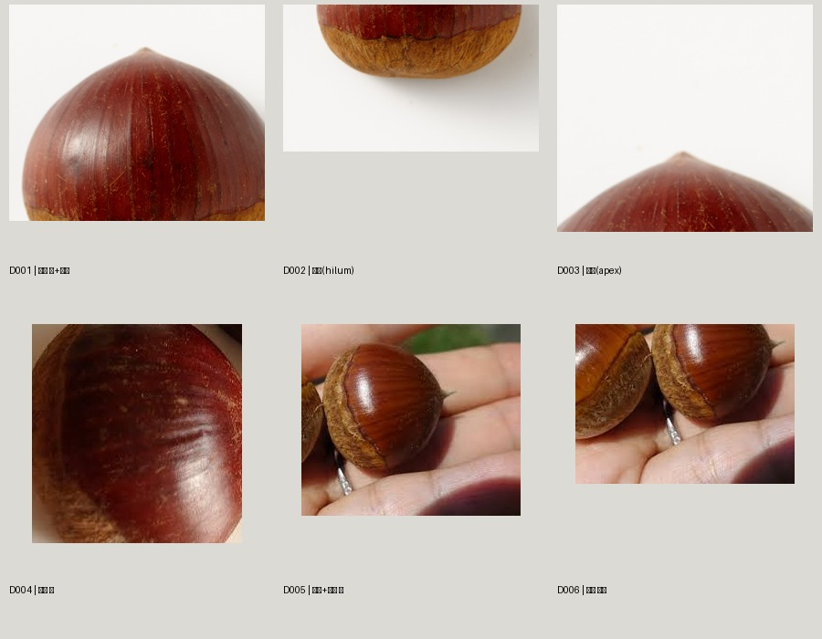
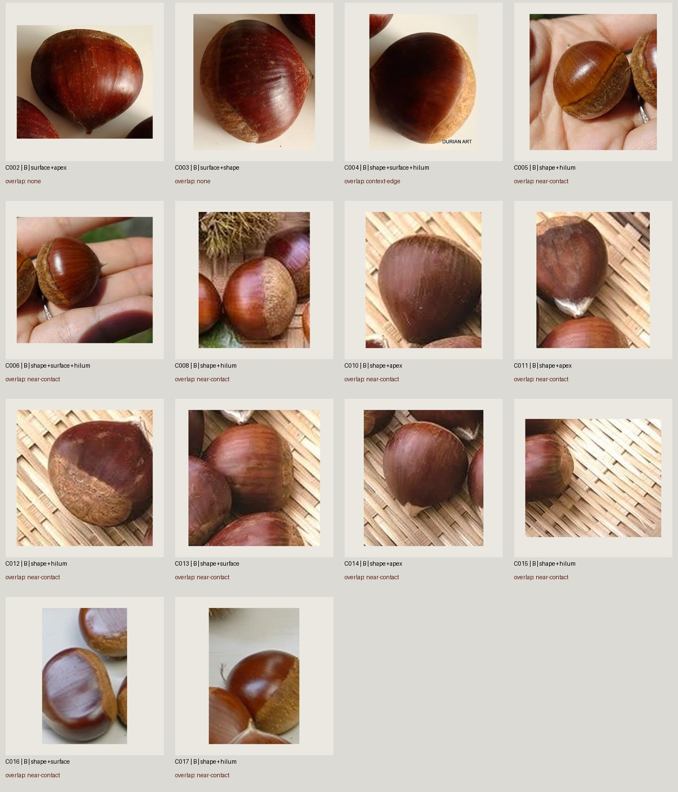
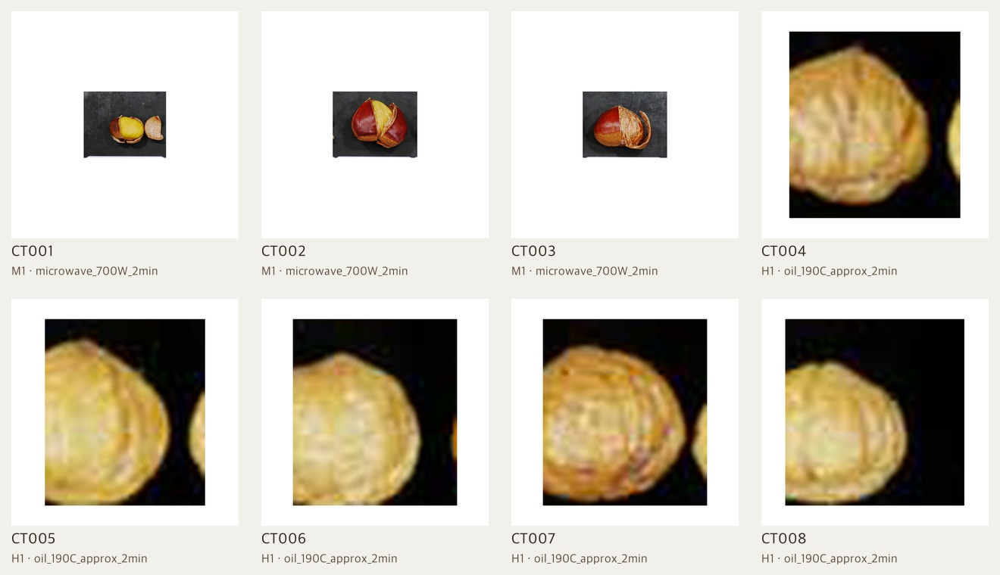

003 · CASTANEA CRENATA · REFERENCE CASE STUDY
밤을 밤답게 만드는
형태와 재질의 기준
학습모듈 이미지에서 반복된 도토리 혼입, 좌면 변형, 플라스틱 과피, 비현실적인 조리 단면을 생밤·표면·조리 상태 세 케이스로 나눠 관리합니다.
데이터 구성
원본은 학교 프로젝트의 정본 위치에 남겨 두고, 이 프로젝트는 경로·SHA-256·출처·이용 조건을 기록합니다. 아래 접촉판은 빠른 판독을 위한 발표용 복제본입니다.




THREE CONTROLLED PROBLEMS
세 개의 케이스
각 케이스는 한 가지 검증 문제만 맡습니다.
현재 판정
세 케이스의 리서치·참조 자료는 90점대를 통과했습니다. S2의 동일 개체 5뷰와 S3의 상태별 고해상도 단독 촬영은 최종 이미지 선정을 위한 제작 게이트로 유지합니다.
사용 범위 · 현재 데이터는 생성 모델 재학습용 말뭉치가 아니라, 참조 이미지 선택·프롬프트 제어·결과 검수용 큐레이션 세트입니다.